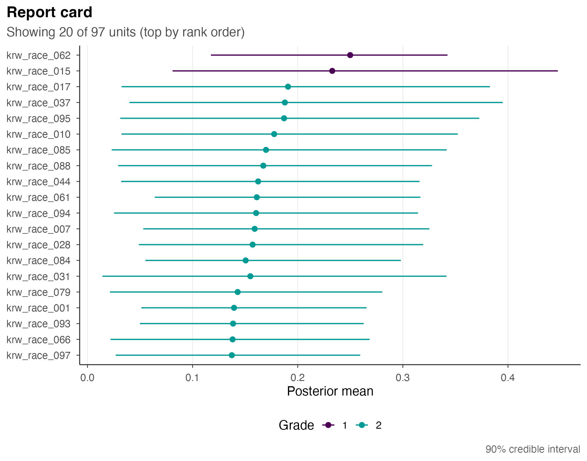
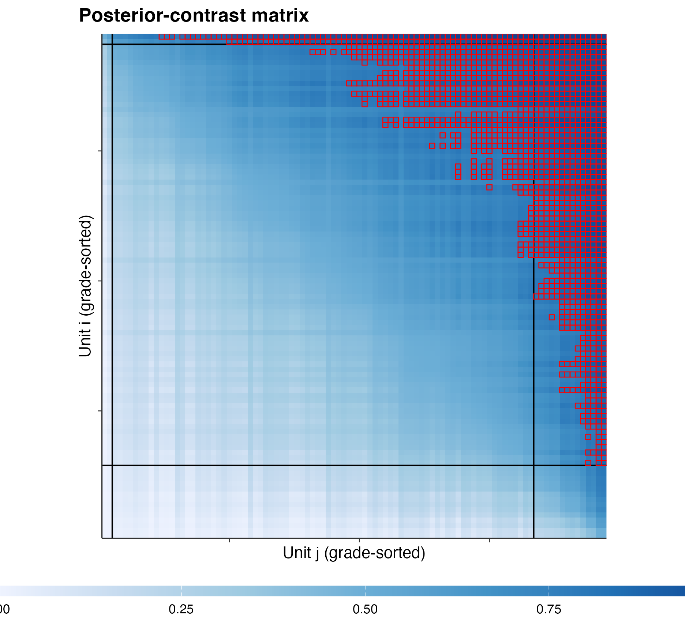
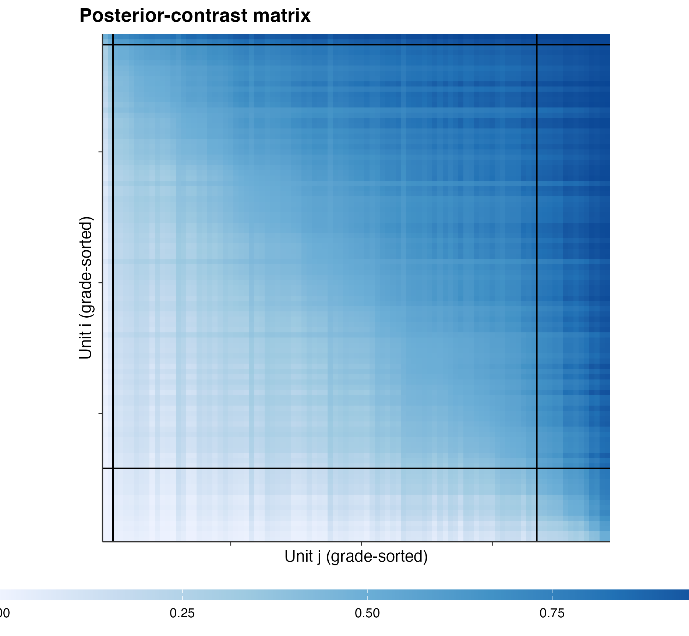
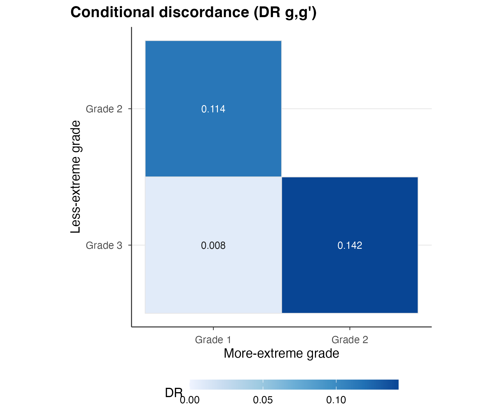
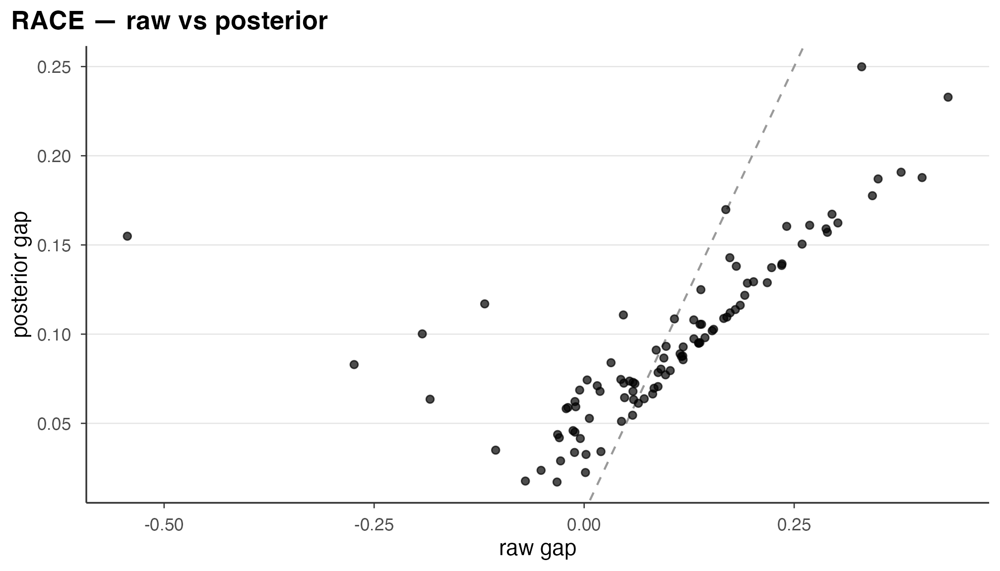
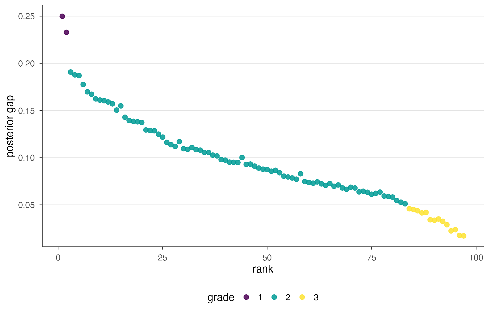
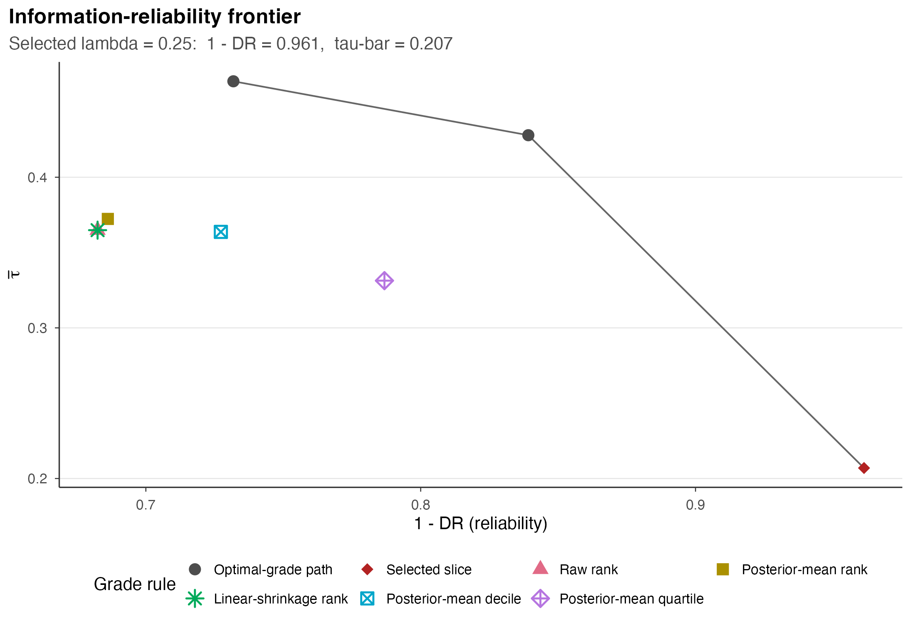

Abstract
gradepath ships four signature figures from Kline, Rose & Walters (2024) as ggplot2 verbs: the report card, the posterior-contrast heatmap, the information-reliability frontier, and the conditional discordance matrix. This cookbook builds each one off the bundled RACE fit in a single uniform recipe — purpose, lead chunk, default plot, one variant — and teaches you how to read it: what each axis, colour, and position means, and what the eye should catch first. It then covers the package theme, the ordinal grade palette, the autoplot() generic, and saving with ggsave(). No equations; pure visual literacy. Every figure is built off a loaded fit, so nothing here re-solves.
1. Four figures, one recipe
gradepath turns a finished grading into four pictures, the same four that carry the argument in Kline, Rose & Walters (Kline et al. 2024). Each is a single verb that returns a ggplot, and each answers one visual question:
- The report card — where does every firm sit, and how sure are we?
- The posterior-contrast heatmap — how cleanly do the grade blocks separate?
- The information-reliability frontier — what does compressing into fewer grades cost, and how do simpler scoring rules compare?
- The conditional discordance matrix — between which grades are the cuts cleanest?
This cookbook gives each figure the same four-part recipe so you can navigate by what you need to communicate:
- Purpose — the one visual question it answers.
- Lead chunk — the few lines that prepare the object to plot.
- Default plot — the figure as shipped, with a reading guide.
- One variant — a single argument worth knowing.
Two things hold throughout. First, every gp_plot_*()
verb returns a ggplot and renders nothing on its own — you
print it (which a code chunk does automatically), and you can keep
extending it with + theme_*() or + scale_*.
Second, nothing here solves: we load the proven RACE fit once and build
all four figures off it.
fit <- gp_parity_fit("race")
fit
#> +------------------------------------------------------------------------+
#> | gp_fit . 97 units . grades: 3 (2/81/14) . selected lambda = 0.25 |
#> +------------------------------------------------------------------------+
#> | units : 97 |
#> | grades : 3 (2/81/14) |
#> | reliability: (1 - DR) = 0.96 tau-bar = 0.21 |
#> | backend : gurobi |
#> +------------------------------------------------------------------------+
#> i summary(fit) for backend/selection details; get_report_card(fit) for the ranked table.That is the bundled 97-firm RACE report card — grades
2 / 81 / 14 at the KRW baseline lambda = 0.25,
reliability 0.96, tau-bar = 0.21. Everything
below reads off fit. A reminder before we start drawing:
the grades are a sorting by posterior evidence, never a
contest, and grade 1 is simply the most-extreme block — the figures show
structure, not a ranking verdict. The one-level race core is accepted
within its declared scope, and these figures are descriptive.
2. Figure 1 — the report card
Purpose. Show every firm at once: its shrunken estimate, its uncertainty, and the grade it landed in. This is KRW Figure 7, the headline figure.
Lead. Pull the assembled card off the fit with
get_report_card() and hand it to the verb.
card <- get_report_card(fit)Default plot. A horizontal point-and-interval (“caterpillar”): one firm per row, the most-extreme firm on top.
gp_plot_report_card(card)
The RACE report card (KRW Figure 7): each of the 97 firms shown as its posterior White-minus-Black callback gap (point) with its credible interval (horizontal line), one firm per row, ranked with the most-extreme firm on top and coloured by its grade in the 2 / 81 / 14 split.
How to read it. Three things carry the meaning, and reading them in order is the whole skill:
- Vertical position is rank. Top row is the most-extreme firm; the eye should travel top-to-bottom as “most to least extreme.”
- Horizontal position is the posterior gap. Where the point sits on the x-axis is the firm’s shrunken estimate — already pulled toward the centre by empirical Bayes, so it is the honest gap, not the raw one.
- Line length is uncertainty. A long horizontal line is an imprecisely measured firm; a short one is a tightly measured firm. The first thing the eye should catch is which intervals overlap: where two firms’ lines cover the same ground, the data cannot separate them, and the colour blocks respect exactly that.
The colour is the grade. The three colour bands stack top-to-bottom, so the grade boundaries read off as the points where the colour changes — and they fall where the intervals stop overlapping, not at arbitrary cut-points.
Variant — max_rows. On 97 rows the
labels crowd; show only the top of the ranking when the extremes are the
story. The verb adds a “Showing N of M” subtitle so the truncation is
never silent.
gp_plot_report_card(card, max_rows = 20)
The same RACE report card restricted to the 20 most-extreme firms (max_rows = 20): the top of the ranking at full height, with a subtitle noting that 20 of 97 firms are shown.
Other one-argument turns: order = "grade" groups the
rows by grade block instead of by rank, and
zero_line = "on" always draws the dashed reference at zero
(the default "auto" draws it only when intervals straddle
zero, so you can see at a glance which firms are distinguishable from no
gap at all).
3. Figure 2 — the posterior-contrast heatmap
Purpose. Look at the structure behind the grades: the full matrix of pairwise posterior contrasts, reordered so the grade blocks sit together. This is KRW Figure 5a. Where Figure 1 shows firms one at a time, this shows every firm against every other at once.
Default plot. The verb reads the pairwise matrix and
the grades straight off the fit, so there is no lead chunk — pass it
fit.

The grade-sorted posterior-contrast heatmap for the RACE fit (KRW Figure 5a): the 97 by 97 pairwise outranking matrix with rows and columns reordered by grade so the grade blocks are contiguous (grade 1 at the top-left), black segments separating the blocks, and cells reaching the different-grade threshold outlined.
How to read it. Read it as a grid of light and dark, block by block:
- Each cell is one ordered pair. Its shade is the posterior probability that the row firm is more extreme than the column firm — dark means “almost surely ordered this way,” and a washed-out middle grey means “the data cannot tell these two apart.”
- The diagonal runs corner to corner, and rows/columns are sorted by grade with grade 1 in the top-left. So the picture should read as a gradient: dark in the upper-right triangle (more-extreme firms over less-extreme ones), light in the lower-left.
- The black segments mark the grade boundaries. The eye should catch the square blocks they carve out along the diagonal: a clean grading shows near-uniform shade inside each block (firms in the same grade are hard to separate) and sharp contrast across blocks (different grades really are different). The outlined cells are the pairs that reach the different-grade threshold — the evidence that earned a cut.
This is a structure plot, not a contest: a dark cell says the posterior orders one firm above another, nothing more.
Variant — threshold = FALSE. Drop the
threshold outlines to see the raw contrast surface with no annotation —
useful when you want the shading alone to tell the story.
gp_plot_posterior_contrast(fit, threshold = FALSE)
The same posterior-contrast heatmap with threshold = FALSE: the grade-sorted outranking matrix shown as raw shading, without the red outlines on cells that reach the different-grade threshold.
4. Figure 3 — the information-reliability frontier
Purpose. Show the trade-off the frontier makes
explicit: between reliability (1 - DR, the
x-axis — how often the grades agree with the pairwise posterior ranking)
and the information the grades carry
(tau-bar, the y-axis — the posterior expected rank
agreement). A finer grading (more grades) carries more information but
is less reliable; pooling into fewer grades raises reliability at the
cost of information. The frontier traces that trade-off across the grade
path and overlays simpler scoring rules, so you can see where the
gradepath grading sits relative to them. This is KRW Figure 6b.
Lead. The frontier is its own object. Build it from
the fit’s grade path and pairwise, and pass
benchmark_scores — one value per firm, named by firm id —
to overlay the naive rules. Here we overlay the raw gap, the full
posterior mean, and a half-shrinkage rule.
post <- get_posterior(fit)
ids <- get_pairwise(fit)$ids
fr <- gp_frontier(
fit$grade_path, pairwise = get_pairwise(fit),
benchmark_scores = list(
raw_estimate = setNames(post$estimate, ids), # the raw gap
posterior_mean = setNames(post$posterior_mean, ids), # full shrinkage
linear_shrinkage = setNames(0.5 * post$estimate, ids))) # half shrinkageDefault plot. Plot fr. This figure
carries a two-row legend at the bottom, so give it a slightly
wider, shorter canvas (fig.width = 8,
fig.height = 5.5) so the legend is not clipped.
gp_plot_frontier(fr)
The information-reliability frontier for the RACE fit (KRW Figure 6b): the optimal-grade path traced in reliability (1 - discordance rate, x-axis) against the posterior expected agreement tau-bar (y-axis), with the selected lambda = 0.25 grading marked and the three naive scoring rules overlaid as dominated points.
How to read it. The two axes are the whole idea, and the benchmarks are the payoff:
-
The x-axis is reliability,
1 - DR— how often the grades agree with the underlying posterior ordering. Further right is cleaner. -
The y-axis is
tau-bar, the posterior expected agreement carried by the grading. Higher is more informative. -
The connected points are the frontier itself. Walk
it from one end to the other and you are trading grade count against
reliability; the highlighted point is the selected
lambda = 0.25grading, and the subtitle reports its exact(1 - DR, tau-bar)coordinates. - The overlaid benchmark points are the simple scoring rules — the raw gap, full shrinkage, half shrinkage. What the eye should catch is that they sit below and inside the frontier: the gradepath grading reaches reliability they cannot, which is the figure’s point. Colour and shape are merged into one two-row legend at the bottom, and there are no in-plot text labels, so read each series off that single legend. The benchmarks are descriptive reference points, not opponents.
Variant — benchmarks = FALSE. Drop the
naive rules to show the bare frontier — the trade-off curve on its own,
when the benchmarks are not the story.
gp_plot_frontier(fr, benchmarks = FALSE)
The bare information-reliability frontier (benchmarks = FALSE): just the optimal-grade path in reliability against tau-bar, with the selected lambda highlighted and no naive-rule overlays.
The other small turns: annotate = FALSE drops the
coordinate readout from the subtitle for a cleaner caption, and
highlight = "all" marks every path point instead of only
the selected one.
5. Figure 4 — the conditional discordance matrix
Purpose. Ask between which grades the cuts are
cleanest. For each pair of grades it reports the discordance rate —
the posterior share of cross-grade firm pairs whose grade ordering runs
against the posterior ordering. This is KRW Figure 10a, and it reads off
the same fr object.
Default plot. A lower-triangular heatmap of the between-grade discordance rates.

The conditional discordance matrix for the RACE fit (KRW Figure 10a): a lower-triangular heatmap of the between-grade discordance rate for each pair of grades, with the more-extreme grade on the columns (grade 1 at the left) and the less-extreme grade on the rows, each cell annotated with its rate. Small off-diagonal values mean clean cuts between grades.
How to read it. It is a small triangle, so read every cell:
- Each cell is one grade pair, with the more-extreme grade on the columns (grade 1 at the left) and the less-extreme grade on the rows.
- The cell value and its shade are the discordance rate for that pair — the posterior share of cross-grade firm pairs ordered against the posterior. Darker is more discordant.
- The eye should catch the off-diagonal cells being light. A light off-diagonal means the cut between those two grades is clean: almost every cross-grade pair is ordered the way the posterior orders it. A dark cell would flag two adjacent grades the data struggle to keep apart. On the RACE fit the off-diagonal stays small — the grades separate cleanly.
Variant — annotate = FALSE. Drop the
printed values for a shading-only heatmap, cleaner when you have many
grades or want the colour alone to read.
gp_plot_discordance(fr, annotate = FALSE)The same conditional discordance matrix with annotate = FALSE: the lower-triangular between-grade heatmap shown by shading only, without the numeric rate in each cell.
6. The theme
Every gradepath verb already draws in the package house style,
theme_gradepath() — a clean theme built on
ggplot2::theme_minimal() with the top and right spines
removed, a light horizontal grid, no vertical grid, and the legend at
the bottom. The setup chunk made it the session default with
theme_set(theme_gradepath()), so your own plots
match the four figures above without any extra call.
You apply it explicitly two ways: set it once as the default, or add
it to a single plot with +.
ggplot(as.data.frame(fit), aes(estimate, posterior_mean)) +
geom_abline(linetype = 2, colour = "grey60") +
geom_point(alpha = 0.7) +
labs(x = "raw gap", y = "posterior gap", title = "RACE — raw vs posterior") +
theme_gradepath()
theme_gradepath() applied to a plain ggplot of each firm’s raw gap against its posterior gap: the gradepath house style with bottom legend, light horizontal grid, and no top or right spine.
Because the verbs return ordinary ggplots, you can also re-apply or
extend the theme on any of the four figures — for example
gp_plot_discordance(fr) + theme_gradepath(base_size = 13)
to bump the font for a slide.
7. The grade palette
The four figures colour grades with one shared ordinal scale, a
perceptually uniform, colour-blind-safe viridis ramp in which
grade 1 (the most-extreme block) is the dark, high-contrast
end. To colour your own grade-keyed plot the same way, add
scale_colour_gradepath() (spelled
scale_color_gradepath() too) for the colour
aesthetic, or scale_fill_gradepath() for
fill.
card <- as.data.frame(fit)
ggplot(card, aes(sort_rank, posterior_mean, colour = factor(grade))) +
geom_point(size = 2, alpha = 0.85) +
scale_colour_gradepath(name = "grade") +
labs(x = "rank", y = "posterior gap")
The ordinal grade palette applied by hand: the 97 firms plotted by posterior gap against rank and coloured by their grade with scale_colour_gradepath(), so a custom plot uses the exact grade colours of the report card.
The point of the shared scale is consistency: a firm’s grade reads
the same colour on your custom plot as on the report card, so a reader’s
eye carries the mapping across figures. For a fill
aesthetic (tiles, bars) use scale_fill_gradepath(); pass
n_grades to fix the palette length when the data do not
contain every level. The colour is an ordinal encoding of
evidence, never a value judgement.
8. autoplot()
If you would rather not remember which verb draws which figure, the
ggplot2 autoplot() generic dispatches on the gradepath
object — and returns the same ggplot the matching
gp_plot_*() verb would, without attaching ggplot2.
autoplot() on a frontier draws the frontier; on a report
card it draws the caterpillar.
autoplot(fr)
autoplot() on the gp_frontier object: the same information-reliability frontier as gp_plot_frontier(fr), dispatched through the ggplot2 generic.
autoplot(get_report_card(fit))
autoplot() on the report-card object: the same caterpillar as gp_plot_report_card(get_report_card(fit)), dispatched through the ggplot2 generic.
These are S3 methods, so call autoplot(x) (not
autoplot.gp_frontier(x)) and let dispatch pick the figure.
autoplot() also works on a bare fit — it draws
the frontier — and forwards extra arguments to the underlying verb, so
autoplot(get_report_card(fit), max_rows = 20) behaves like
the variant in section 2.
9. Saving figures
Every verb returns a ggplot, so save any of the four with
ggsave(). Pass the plot object, a filename, and a size. A
useful rule of thumb from the canvases above: the report card wants a
tall aspect (many rows), the heatmaps want a square
one, and the frontier wants a wide one (the two-row bottom
legend).
# The report card: tall.
ggsave("fig_report_card.png", gp_plot_report_card(get_report_card(fit)),
width = 7, height = 8, dpi = 150)
# The heatmaps: square.
ggsave("fig_posterior_contrast.png", gp_plot_posterior_contrast(fit),
width = 6, height = 6, dpi = 150)
ggsave("fig_discordance.png", gp_plot_discordance(fr),
width = 6, height = 5, dpi = 150)
# The frontier: wide, so the bottom legend is not clipped.
ggsave("fig_frontier.png", gp_plot_frontier(fr),
width = 8, height = 5.5, dpi = 150)To verify the recipe end-to-end without leaving a file in your working directory, write to a temporary path and check it exists:
out <- file.path(tempdir(), "fig_frontier.png")
ggsave(out, gp_plot_frontier(fr), width = 8, height = 5.5, dpi = 150)
file.exists(out)
#> [1] TRUEFor a paper, swap the tempdir() path for your own
filename and reach for a vector device (device = cairo_pdf
for a PDF) when the journal wants vector art.
10. Where to next
You now have all four KRW signature figures off a single loaded fit,
plus the theme, the palette, autoplot(), and saving. The
four are descriptive summaries of a finished grading: nothing in these
figures asserts more than the posterior evidence supports — the grades
are a sorting, never a contest.
- The workflow behind the fit — A2 walks the seven stages that produce the object every figure here reads.
- Getting started — A1 is the gentle first contact, with the single most informative figure (the report card) in context.
- Reading and exporting — A3 covers the accessors, the tidy table, and CSV / round-trip export.
- Solvers and calibration — A5 covers the open-source backends and the calibration harness.
- The figures, formalized — M4 derives the frontier, the discordance matrix, and the report card with the math this cookbook deliberately skipped; M1 fixes the notation.
Provenance
sessionInfo()
#> R version 4.6.0 (2026-04-24)
#> Platform: aarch64-apple-darwin23
#> Running under: macOS Tahoe 26.2
#>
#> Matrix products: default
#> BLAS: /Library/Frameworks/R.framework/Versions/4.6/Resources/lib/libRblas.0.dylib
#> LAPACK: /Library/Frameworks/R.framework/Versions/4.6/Resources/lib/libRlapack.dylib; LAPACK version 3.12.1
#>
#> locale:
#> [1] en_US/en_US/en_US/C/en_US/en_US
#>
#> time zone: America/Chicago
#> tzcode source: internal
#>
#> attached base packages:
#> [1] stats graphics grDevices utils datasets methods base
#>
#> other attached packages:
#> [1] ggplot2_4.0.3 gradepath_0.5.0
#>
#> loaded via a namespace (and not attached):
#> [1] Matrix_1.7-5 ebrecipe_0.5.0 gtable_0.3.6 jsonlite_2.0.0
#> [5] dplyr_1.2.1 compiler_4.6.0 tidyselect_1.2.1 slam_0.1-55
#> [9] dichromat_2.0-0.1 jquerylib_0.1.4 splines_4.6.0 systemfonts_1.3.2
#> [13] scales_1.4.0 textshaping_1.0.5 yaml_2.3.12 fastmap_1.2.0
#> [17] lattice_0.22-9 R6_2.6.1 labeling_0.4.3 generics_0.1.4
#> [21] knitr_1.51 htmlwidgets_1.6.4 gurobi_13.0-1 tibble_3.3.1
#> [25] desc_1.4.3 bslib_0.11.0 pillar_1.11.1 RColorBrewer_1.1-3
#> [29] rlang_1.2.0 cachem_1.1.0 xfun_0.57 fs_2.1.0
#> [33] sass_0.4.10 S7_0.2.2 otel_0.2.0 cli_3.6.6
#> [37] withr_3.0.2 pkgdown_2.2.0 magrittr_2.0.5 digest_0.6.39
#> [41] grid_4.6.0 lifecycle_1.0.5 vctrs_0.7.3 evaluate_1.0.5
#> [45] glue_1.8.1 farver_2.1.2 ragg_1.5.2 rmarkdown_2.31
#> [49] tools_4.6.0 pkgconfig_2.0.3 htmltools_0.5.9